Twój P12 (2,2 mmH₂O) to ~5% tego, czego wymaga ten filtr. Oryginalny Xiaomi 3H przepycha 380 m³/h przez blower o ciśnieniu setek Pa. Dlatego „słabo ciągnie" — to nie wada, to fizyka. Dobra wiadomość: serwerowa seria ARCTIC S12038 rozwiązuje problem za grosze.
| Opcja | Co kupić | Cena | Ciśnienie (× twój P12) | Wydruk 3D potrzebny? | Est. przepływ przez filtr |
|---|---|---|---|---|---|
| 🥇 Mocna (rekomendacja) | ARCTIC S12038-4K | 169 kr | 11,45 mmH₂O (~5,2×) | Tak — nakładka pod 38 mm (Jason 1366865, testowany z fanem 120×38) | ~100–170 m³/h → pokój 15–18 m² |
| 🥈 Zero przeróbek | ARCTIC P12 Pro | 109,49 kr | 6,9 mmH₂O (~3,1×) | Nie — 25 mm wchodzi w obecną nakładkę | ~60–120 m³/h → pokój ~10–12 m² |
| 🏋️ Level oryginału | ARCTIC S12038-8K | 189 kr | 37 mmH₂O (~17×) | Tak — jak wyżej | ~250–370 m³/h → CADR jak fabryka |
Do każdego: regulator PWM z pokrętłem ~14 kr z Ali (link) — 4K/8K na pełnych obrotach są głośne (50–60 dB), na 30–40% PWM cicho i nadal mocno. Pomiń: Noctua iPPC-3000 (310 kr za 7,63 mmH₂O — P12 Pro daje 6,9 za 110 kr), P12 Max (229 kr, słabszy od Pro), Delta PFC1212DE (4,8 A = 58 W — zjada zasilacz). Ali vs Amazon: 8K na Ali kosztuje 409 kr — na Amazonie 189 kr; na Ali ktoś dostał falsyfikat zamiast wersji serwerowej → Amazon bezpieczniejszy, dostawa w piątek 27.11.
Weryfikacja zamówienia (Amazon #407-8028761, 27.03.2026): fan = ARCTIC P14 140 mm 1700 RPM (106 kr) → wydrukowana nakładka mieści fan 140×140×27 mm. Lista powyżej (120 mm) zostaje dla kogoś z nakładką 120 mm — ale pod slot 140 mm ranking wygląda tak:
| Zdjęcie | Fan (140 mm, pasuje 1:1 w wydruk) | Ciśnienie | Przepływ free | Cena Amazon.se | Est. przez filtr |
|---|---|---|---|---|---|
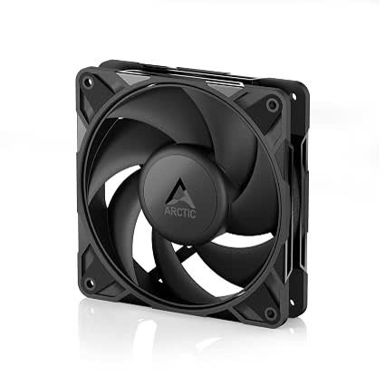 | ARCTIC P14 Pro (400–2500 RPM PWM, 0,35 A, 27 mm) 🥇 zero przeróbek | 5,2 mmH₂O (51 Pa) ≈ 2,3× P14 | 186 m³/h | 122,99 kr | ~45–90 m³/h → pokój 6–8 m² |
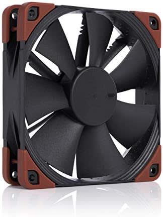 | Noctua NF-A14 industrialPPC-3000 PWM (3000 RPM, 25 mm, IP-pad) 🥈 premium | 6,58 mmH₂O (65 Pa) ≈ 2,9× P14 | 269,3 m³/h | 329,90 kr | ~60–110 m³/h (duży free-flow) → 12–15 m² |
| — | ARCTIC P14 Max (2800 RPM) | 4,18 mmH₂O | 161 m³/h | 393,49 kr, dostawa 16–19 Dec | SKIP — Pro lepszy i 3× tańszy |
| — | ARCTIC P14 (Twój, 1700 RPM) | 2,0–2,4 mmH₂O | 123,8 m³/h | 106 kr (kupiony) | ~20–50 m³/h — stąd „slabo ciągnie" |
Werdykt pod slot 140 mm: bez drukowania czegokolwiek → ARCTIC P14 Pro za 122,99 kr (2,3× ciśnienia, cichy, 0 dB mode). Maksimum z gniazdka 12 V bez zmian w nakładce → NF-A14 iPPC-3000 za 329,90 kr (6,58 mmH₂O + ogromny free-flow, głośny na full → PWM). Nadal alternatywa absolutna: S12038-4K (11,45 mmH₂O, 169 kr) + wydruk adaptera 120×38 (Jason 1366865) — więcej ciśnienia za 1 h druku. Specy: P14 Pro PDF · NF-A14 iPPC-3000.
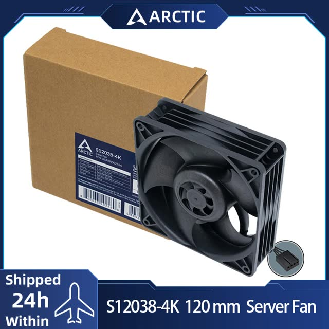
169 kr Amazon.se · 125,90 kr AliExpress
120×120×38 mm serwerowy · 600–4000 RPM · 11,45 mmH₂O = 112 Pa · 180 m³/h · 0,33 A (~4 W!) · 4-pin PWM · dual ball w mosiężnej obudowie + prostowniki strumienia. Oficjalny spec sheet Arctic potwierdza parametry.
„Below 1200 rpm: nearly silent… treat them as very high performance, high-pressure 1500 rpm fans" (recenzja Amazon ★4.6). Uwaga: break-in ~50–100 h do pełnego zakresu RPM.
Amazon.se (dostawa piątek 27.11) · AliExpress 125,90 kr · Spec PDF
109,49 kr Amazon.se
120×120×25 mm · 400–3000 RPM · 6,9 mmH₂O = 67,7 Pa (~3,1× twój P12) · 131 m³/h · ~4 W · PWM · 0dB mode. Najtańsza droga do sensownego efektu bez drukowania niczego — wchodzi w obecną nakładkę Adivora.
3× ciśnienie twojego P12 za ~110 kr. Jeśli chcesz „kupiłem, włożyłem, działa" — to jest to.
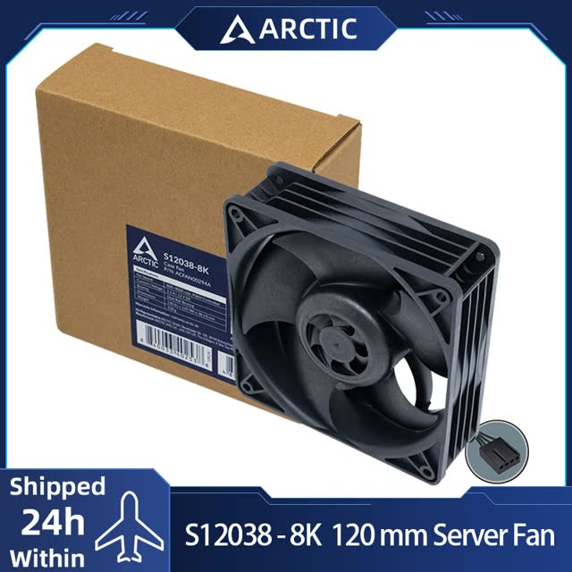
189 kr Amazon.se (Ali: 409 kr — nie tam!)
120×120×38 mm · 800–8000 RPM · 37 mmH₂O = 363 Pa (~17× P12) · 370 m³/h · PWM. Jedyny wentylator axial w teście, który przy pełnych obrotach gra w lidze oryginalnego blowera Xiaomi (CADR 380 m³/h).
Recenzent: „8K RPM at 120 mm is madness… loud, BUT it can be slowed" — stąd regulator obowiązkowy. Wersje 3-pack: 4K ×3 = 399 kr, 8K ×3 = 449 kr (gdybyś chciał multi-fan).
309,90 kr Amazon.se
120×120×25 mm · 750–3000 RPM · 7,63 mmH₂O (74,9 Pa) · 186,7 m³/h · 43,5 dB(A) @max.
DLACZEGO SKIP: P12 Pro daje 6,9 mmH₂O za 109 kr — Noctua za 310 kr oferuje tylko +11% ciśnienia. Poza tym: P12 Max (229,75 kr, 4,35 mmH₂O — słabszy i droższy od Pro), NF-A12x25 (328 kr, 2,34 mmH₂O — za słaby mimo gwiazdek), be quiet! PW3 HS (154 kr, 2,41 mmH₂O — za słaby).
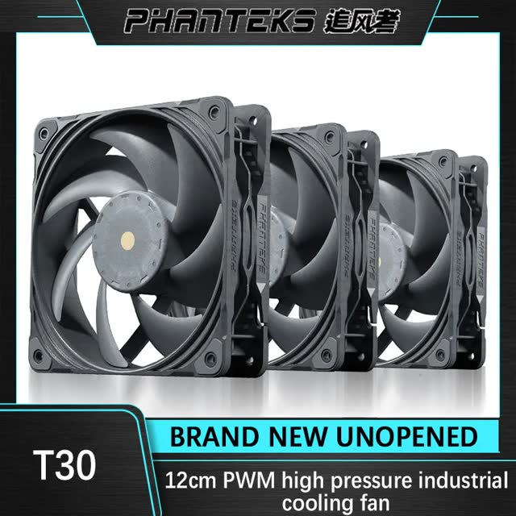
530,24 kr AliExpress · ★4,9 (53 rec.)
120×120×30 mm · 500–3000 RPM · 101 CFM (172 m³/h) · dual vapo bearing · 39,7 dB — najcichszy „mocny" w zestawieniu. Recenzje: „brak bicia osi, cichy, jakość ponad oczekiwania".
30 mm grubości = graniczne dla nakładki 25 mm (dystans/lekka modyfikacja). Płacisz 3× tyle co za S12038-4K głównie za kulturę pracy.
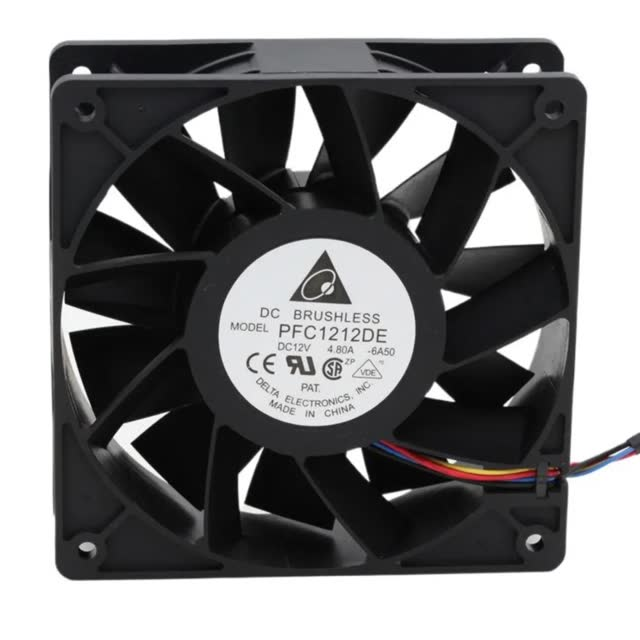
178,84 kr AliExpress · ★4,6 (14)
120×120×38 mm · 7000 RPM · klasa ~30 mmH₂O (confidence: medium — ciśnienie niepotwierdzone wprost)… ale 4,8 A = ~58 W i głośny jak serwerownia.
Twój zasilacz 12 V musi mieć ≥6 A z zapasem, a sąsiedzi będą wiedzieć, że filtrujesz powietrze. S12038-8K daje podobną klasę ciśnienia za 4 W–kilkanaście W. Delta QFR1212GHE (152 kr) — rating 3,0 na Ali, ryzyko.
Źródła: oficjalne spec sheety Arctic (PDF), Noctua (noctua.at / pc-builder.io), Delta/Sunon/GDSTIME (Mouser/DigiKey/equipspares) + listingi. Ref: twój Arctic P12 = 2,2 mmH₂O = 21,6 Pa.
| Wentylator | Rozmiar | RPM | Przepływ | mmH₂O | Pa | × P12 | PWM | Pobór | Gdzie / cena |
|---|---|---|---|---|---|---|---|---|---|
| ARCTIC S12038-8K 🏋️ | 120×38 | 800–8000 | 370 m³/h | 37 | 363 | 17× | ✅ | n/p (≥1 A PSU) | Amazon 189 kr |
| ARCTIC S12038-4K 🥇 | 120×38 | 600–4000 | 180 m³/h | 11,45 | 112 | 5,2× | ✅ | 0,33 A / 4 W | Amazon 169 kr / Ali 126 kr |
| GDSTIME 12038 PWM | 120×38 | 5300 | 213 CFM | ~29,7 ⚠️ | 291 | ~13,5× | ✅ | n/p | Ali (budżet, dane mniej pewne) |
| Delta AFB1212EHE | 120×38 | 4000–4600 | 361 m³/h | 17,8 | 174 | 8,1× | warianty | 1,8–2,2 A / 22–26 W | dystrybucja (drogo) |
| Delta AFB1212SHE | 120×25,4 | 3700 | 258 m³/h | 14,5 | 142 | 6,6× | ❌ (2-wire) | 1,05 A / 12,6 W | delta-fan.com |
| Sunon MEC0381V1 MagLev | 120×38 | 3100 | 234 m³/h | 9,14 | 90 | 4,2× | warianty | 0,83 A / 10 W | Mouser |
| Noctua NF-F12 iPPC-3000 | 120×25 | 750–3000 | 186,7 m³/h | 7,63 | 75 | 3,5× | ✅ | ~0,3 A | Amazon 309,90 kr |
| ARCTIC P12 Pro 🥈 | 120×25 | 400–3000 | 131 m³/h | 6,9 | 68 | 3,1× | ✅ | ~4 W | Amazon 109,49 kr |
| ARCTIC P12 Max | 120×25 | 400–3300 | 137,7 m³/h | 4,35 | 43 | 2,0× | ✅ | 0,29 A | Amazon 229,75 kr |
| ARCTIC P14 Max | 140×27 | 400–2800 | 161 m³/h | 4,18 | 41 | 1,9× | ✅ | 0,35 A | Amazon 393 kr |
| Noctua iPPC-2000 | 120×25 | 2000 | 121,8 m³/h | 3,94 | 39 | 1,8× | ✅ | ~1 W | Amazon 334,90 kr |
| be quiet! PW3 high-speed | 120×25 | 2100 | 101 m³/h | 2,41 | 24 | 1,1× | ✅ | n/p | Amazon 154 kr |
| Noctua NF-A12x25 | 120×25 | 2000 | 102 m³/h | 2,34 | 23 | 1,06× | ✅ | 1,2 W | Amazon 328 kr |
| 120×25 | 1800 | 95,7 m³/h | ✅ | ~1,2 W | ZA SŁABY — punkt odniesienia |
⚠️ = wartość z listingu, dane producenta niespójne (2-pin podaje 10 Pa, PWM 1,17 inH₂O) — traktować ostrożnie. Ciekawostka poza grą: Sunon XG12038 48 V = 141,7 mmH₂O (1389 Pa!) — potwór, ale wymaga 48 V.
Przepływ „free-air" ze specyfikacji to marketing — przez gęsty filtr HEPA+węgiel spada ~2× (potwierdzone na forach: r/AirPurifiers). Kotwice kalibracyjne z realnych pomiarów:
| Wentylator | Ciśnienie | Est. przepływ przez filtr Xiaomi | Pokój (5 wymian/h) | Pewność |
|---|---|---|---|---|
| ARCTIC P12 (masz) | 21,6 Pa | ~20–50 m³/h | biurko 2–4 m² | estymata — pasuje do obserwacji „slabo ciągnie" |
| ARCTIC P12 Pro | 68 Pa | ~60–120 m³/h | ~10–12 m² | estymata |
| ARCTIC S12038-4K | 112 Pa | ~100–170 m³/h | ~15–18 m² | estymata |
| Noctua iPPC-3000 | 75 Pa | ~70–130 m³/h | ~12 m² | estymata |
| ARCTIC S12038-8K | 363 Pa | ~250–370+ m³/h | 20+ m² (poziom oryginału CADR 380) | estymata |
Metoda: przepływ ∝ ciśnienie przy przepływie laminarnym przez media filtra; zakres = niepewność oporu węgli + szczelności. Chcesz dokładnie? Anemometr USB za ~50 kr z Ali mierzy wydatek na wylocie.
Zeskanowałem MakerWorld (Printables = Cloudflare CAPTCHA, patrz coverage): gotowej nakładki pod 120×38 + filtr Xiaomi NIE MA — ale jest prawie gotowa i są dwie trasy blower:
| Zdjęcie | Model | Fan | Status pod twój projekt |
|---|---|---|---|
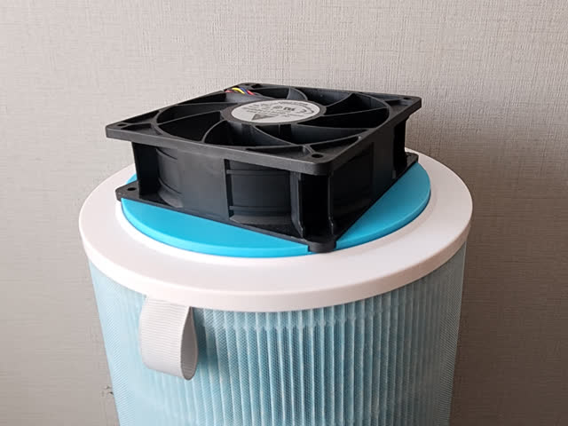 | 120mm Fan Adapter for Xiaomi Air Purifiers — Jason 102 pobrania · ★4,9 (8) · 33 g PLA / 1 h druku | 120 mm (testowany z Delta QFR1212GHE = 120×38!) | NAJLEPSZY kandydat pod S12038-4K/8K — „fan just clicks in", „with a high static fan it holds a paper towel" |
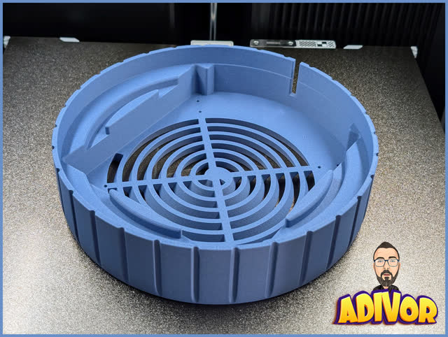 | DIY Air Purifier Kit — Adivor (TWÓJ) | 120 lub 140 mm, standardowa grubość | Kieszeń nie potwierdzona pod 38 mm → pod P12 Pro bez zmian; pod S12038 albo przeróbka kieszeni do 38 mm, albo Jason wyżej |
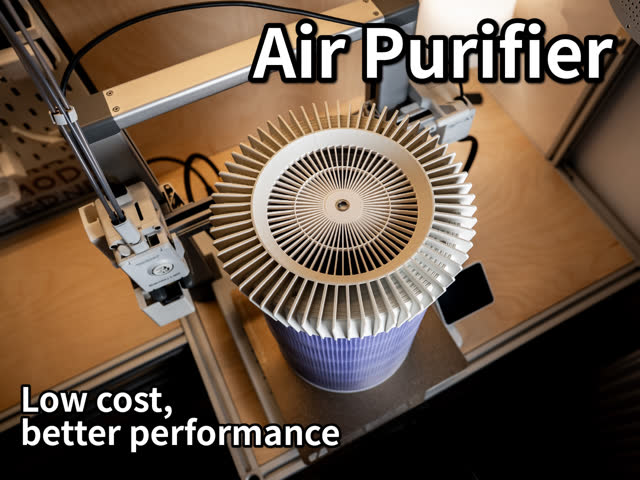 | Air Purifier 2nd Gen — Cliclack 4,7k pobrań · ★4,9 (122) | Profil 140×38 (i 140×25) — jedyna gotowa nakładka pod gruby fan | Jeśli wolisz 140×38 (np. GDSTIME 14038 z Ali) zamiast 120×38 |
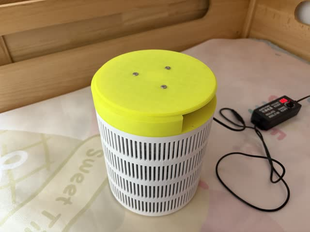 | Centrifugal Mini Air Purifier — Ray 122 pobrania · V2.0 | 12025 turbine/centrifugal (~140 Pa deklarowane!) 12 V | Trasa „blower jak w oryginale" — cisza przy wysokim sprężu; gotowa adaptacja pod filtr Xiaomi |
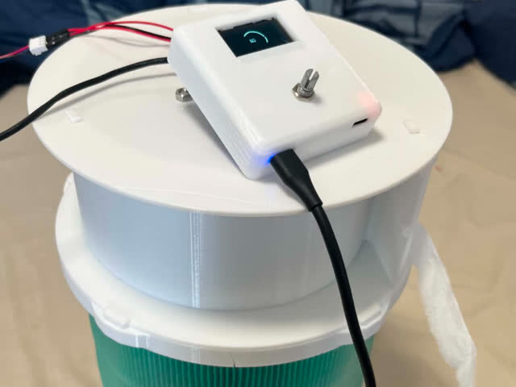 | Centrifugal Air Purifier 12060 — volute | SNO*FAN 12060H12B (12 V / 1,0 A) — CADR ~100 m³/h, 51 dBA | Nowy model (0 pobrań) — obiecująca inżynieria, ale nieprzetestowany przez społeczność |
Dead-end: 135×38 (rozmiar martwy) i multi-fan 2–4× 120 mm pod filtr Xiaomi (nie istnieje; przy cenach S12038 też bez sensu — 4K za 169 kr bije 2× P12 Max za 460 kr).
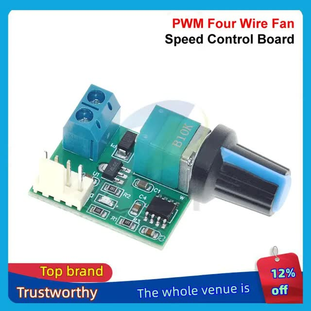
Regulator PWM 4-pin z pokrętłem i włącznikiem — 13,83 kr (AliExpress; wariant z czujnikiem temperatury 16,97 kr; 5-pack 33,76 kr). Wpięty między zasilacz a wentylator: 100% = full moc, 30–40% = cicho do sypialni.
Bonus: taśma piankowa uszczelniająca (~10 kr, Kjell/Byggmax) do styku nakładka↔filtr.
| Źródło | Status | Szczeble | Uwagi |
|---|---|---|---|
| AliExpress | ✅ COVERED | skrypty (7 fraz → ~500 ofert → 60 uniq → 8 PDP → 3 recenzje) | anty-ban discipline, ceny SEK |
| Amazon.se | ✅ COVERED | Lightpanda (padł) → curl (bm-verify) → r.jina.ai ✅ | 6 PDP, ceny, dostawy |
| Arctic — oficjalne specy | ✅ COVERED | strona (JS) → PDF spec sheety ✅ | P12 Max/Pro/P14 Max + S12038-4K |
| Noctua — oficjalne specy | ⚠️ PARTIAL | noctua.at (blokady/429) → pc-builder.io ✅ + noctua.at A12x25 ✅ | iPPC-3000 z mirroru, reszta oficjalnie |
| Delta / Sunon / GDSTIME specy | ✅ COVERED | Mouser / DigiKey / equipspares / delta-fan.com | wartości inH₂O przeliczone na mmH₂O/Pa |
| MakerWorld (nakładki) | ✅ COVERED | r.jina.ai (8 modeli + detail Adivora) | zdjęcia CDN pobrane lokalnie |
| Printables | ❌ BLOCKED | r.jina.ai (CAPTCHA) → DDG snippets (2 modele) → browser Chrome (CAPTCHA „Just a moment") | dane snippet-only w sekcji fora; kluczowe pytania odpowiedział MakerWorld |
| Fora PL (elektroda) | ✅ COVERED | 2 wątki z liczbami (380 zł build, spręż >150 Pa) | |
| ✅ COVERED | reddit.com 403 → redlib mirror ✅ | 5 wątków (r/Noctua, r/AirQuality, r/BambuLab, r/AirPurifiers ×2) | |
| Testy/pomiary | ✅ COVERED | Hackaday ×2, EPA/cleanairdata, Smart Air, texairfilters | realne CADR i dB |
| forbot.pl | ⚠️ SNIPPET | Cloudflare; cytat przez DDG | kluczowa liczba (150 m³/h ≈ 2× mniej niż Xiaomi) pochodzi stąd |